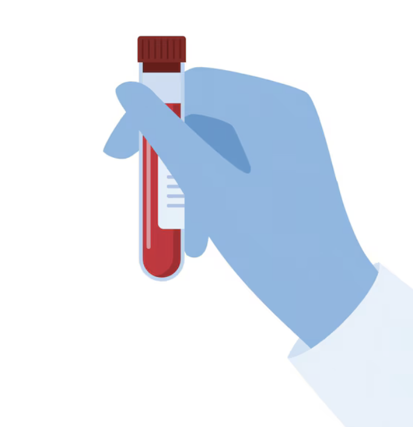

Jeu de Liaison - Rein 3
Relie chaque terme à sa bonne définition en cliquant sur les éléments.
Termes


Reins
Tension artérielle
Globules rouges
Bandelette urinaire
DFG
Créatine
Rein endommagé
Progression
Définitions
Ce test permet de mesurer la créatinine dans le sang.
Un suivi médical régulier est nécessaire pour prévenir l’aggravation de l’insuffisance rénale.
Les reins filtrent le sang pour éliminer les toxines.
L’hypertension artérielle est un facteur de risque pour l’insuffisance rénale.
Le rein produit de l’EPO, une hormone qui stimule la production de globules rouges.
La bandelette urinaire peut révéler des anomalies dans les fonctions rénales, comme la présence de protéines dans l'urine.
Le DFG est un indicateur clé de la fonction rénale, plus il est bas, plus la fonction des reins est altérée.
Un taux élevé de créatinine peut signaler un dysfonctionnement rénal et nécessite un suivi médical..
Un rein endommagé filtre moins efficacement le sang, ce qui entraîne une accumulation de toxines dans le corps.
L’insuffisance rénale chronique évolue lentement, mais une détection précoce permet de stabiliser la progression de la maladie.